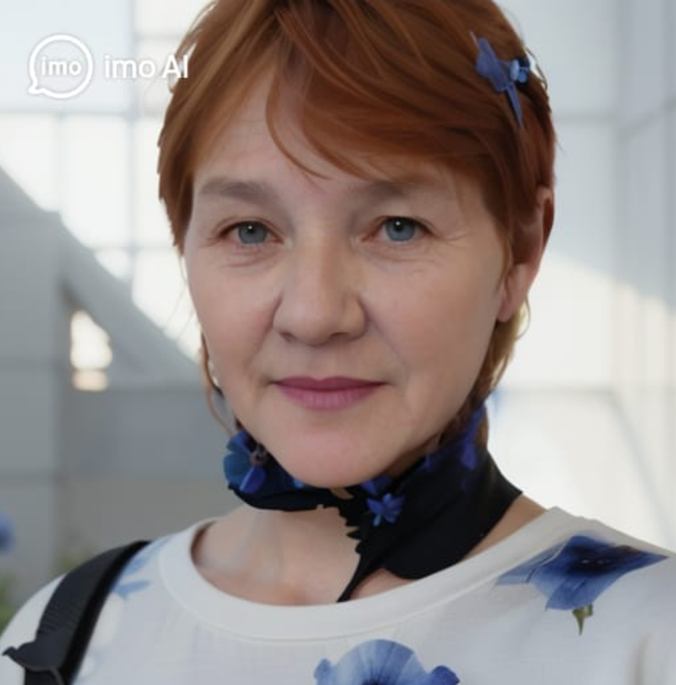

Светлана Процюк
Авторская страница

Произведений: 162
Читателей: 3396
Регион: Россия
ПОЗДРАВЛЯЕМ С ПОБЕДОЙ!
Уважаемая Светлана, ваше творчество признано лучшим в 2026 году!
Вы заняли 1 МЕСТО в ежегодном поэтическом конкурсе «Золотое перо»!
Последние произведения:
- Весенний сад — 12.06.2026
- Моя душа — 05.06.2026
- Утренний кофе — 28.05.2026